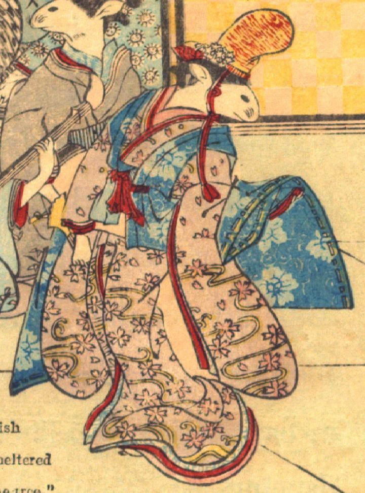

舞う女の鼠。髪を結って、花の簪を挿し、黄色と赤色の烏帽子をかぶっている。桜と流水の柄が描かれた桃色の着物と青色の袖なし羽織を身にまとっている。右手に扇子を持ち、左袖をあげ、身をひねって舞っている。手は人間のものである。
著作者：David Thompson／出典：親書誌：U426_nichibunken_0112：Nedzumi no Yome-Iri／日付：2006／資源識別子：U426_nichibunken_0112_0010_0005
Copyright (c)2010- International Research Center for Japanese Studies, Kyoto, Japan. All rights reserved.